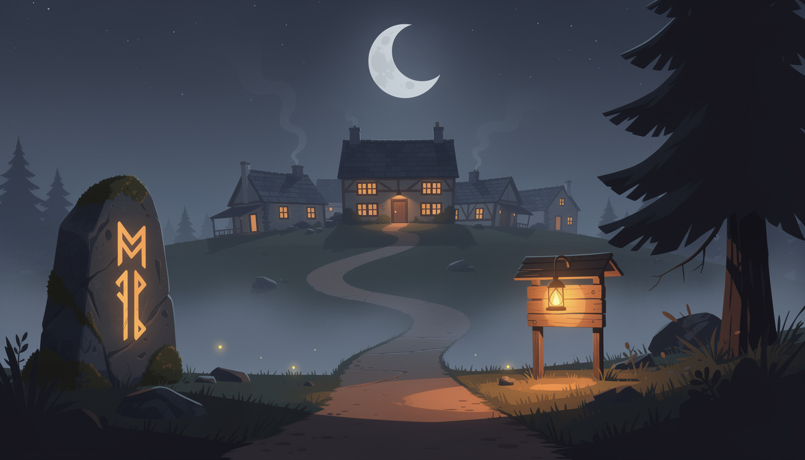

{this.src='waystone-art/nocturne-a.png?r='+this.dataset.r},900*this.dataset.r)}">You’ve reached Waystone.
The stone remembers. The village keeps. Are you passing through, or staying?

internal concept study — artist-brief material, not final art
tap the card on the board — the village will step back
tap anywhere — the village returns